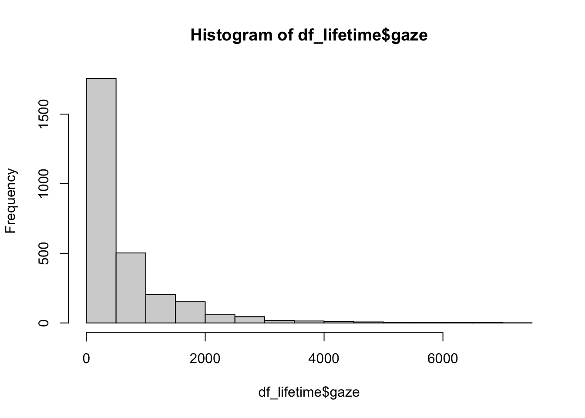
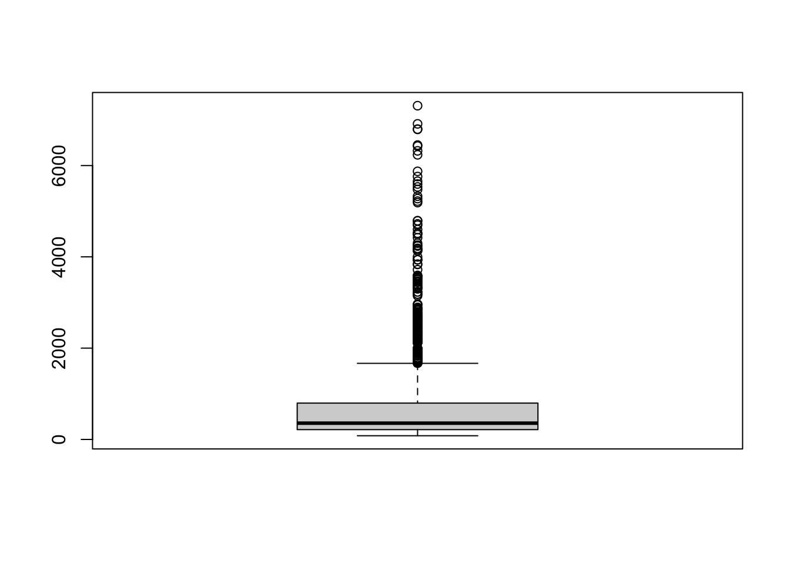
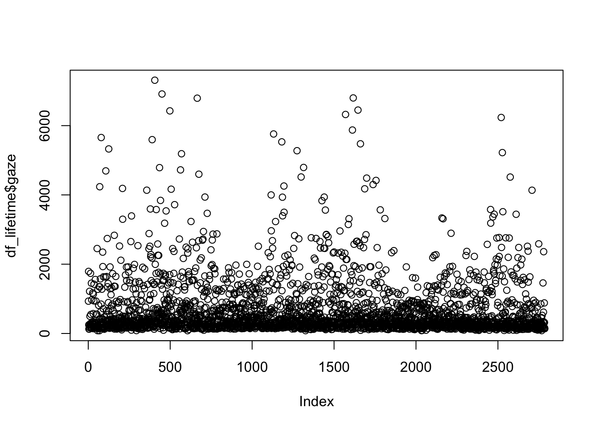
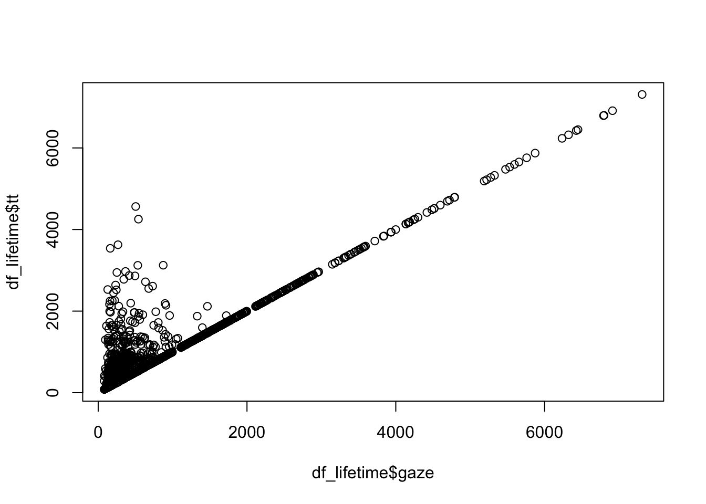

knitr::opts_chunk$set(eval = T, # evaluate = T for REPRODUCIBLE analyses
echo = T, # 'print code chunk?'
message = F, # print messages?
error = T, # render even if errors encountered?
warning = F) # print warnings?Working with eye-tracking reading data in R
Biondo et al. (2021)
Set-up
## play sound if error encountered
### from: https://sejohnston.com/2015/02/24/make-r-beep-when-r-markdown-finishes-or-when-it-fails/
options(error = function(){ # Beep on error
beepr::beep(sound = "wilhelm")
Sys.sleep(2) #
}
)
## and when knitting is complete
.Last <- function() { # Beep on exiting session
beepr::beep(sound = "ping")
Sys.sleep(6) # allow to play for 6 seconds
}# Create references.json file based on the citations in this script:
# 1. make sure you have 'bibliography: references/references.json' in the YAML
# 2. create a new folder called 'references'
# 3. run:
rbbt::bbt_update_bib("_et_dataset.qmd")The Perfect Lifetime Effect
- the English Present Perfect (e.g., has done) (e.g., Comrie 1976)
- must be used in temporal contexts that include the present
- I have been sick since last week
- *I have been sick last year
- must be used in temporal contexts that include the present
- The Lifetime Effect
- a referent’s lifetime (dead/alive) constrains verb tense in certain circumstances (e.g., Mittwoch 2008a)
- *Queen Elizabeth II is the British monarch.
- *King Charles III was the British monarch.
- a referent’s lifetime (dead/alive) constrains verb tense in certain circumstances (e.g., Mittwoch 2008a)
- the Perfect Lifetime Effect
- the (English) Present Perfect cannot be used to describe events of a dead person (e.g., Mittwoch 2008b)
- *Queen Elizabeth II has met many politicians.
- King Charles III has met many politicians.
- the (English) Present Perfect cannot be used to describe events of a dead person (e.g., Mittwoch 2008b)
Our first dataset
- eye-tracking during reading
- participants read a referent-lifetime context, followed by a critical sentence
- button-press when done reading
- critical sentences contained the Present Perfect or Simple Future
- button-press when done reading
- participants read a referent-lifetime context, followed by a critical sentence
- each trial ended with a 7-point naturalness Likert scale
Design description
- 2x2 design
- two 2-level factors (2x2 = 2-level x 2-level)
- factor 1: lifetime (levels: dead, alive)
- factor 2: tense (levels: PP, SF)
- two 2-level factors (2x2 = 2-level x 2-level)
- predictors/independent variables
- lifetime
- tense
- measure/dependent variable(s)
- first-fixation time (milliseconds)
- first-pass reading time (ms)
- regression path duration (ms)
- tt (ms)
Working with the data
Day 1
- load the data
- inspect data
- eyeball data structure
- print summaries
- plot the data
Day 2
- tidy data
- transform data
- visualise data
Day 3
- analyse data
- confirmatory (a priori)
- exploratory (post-hoc)
- report analyses
1. Load/install packages
- install
- only do once (or when you working on a new computer, etc.)
install.packages("tidyverse")Error in contrib.url(repos, "source"): trying to use CRAN without setting a mirrorinstall.packages("here")Error in contrib.url(repos, "source"): trying to use CRAN without setting a mirror- load
- needed at the start of each session
2. Load dataset
here package
Using the here package, we can access files relative to where our .RProj is stored.
In ‘olden times’, we had to specify the file path with something like:
# load in data from an *absolute* file path
df_lifetime <- read_csv("Users/yournamehere/Documents/SoSe2023/ET_reading/data/data6reg_cleaned_fixed_Oct2020.csv")Or, we’d set an absolute path as our working directory, to which all other file paths were relative
This meant that if I sent my project folder to somebody else, they wouldn’t be able to run my code because they would have to change the absolute file path to match their machine.
2. Inspect dataset
- there are several different things you can inspect
- and different ways to accomplish those things
Data structure
- datasets typically contain a lot of rows
- so we want to get a feel for how the data is structured
head(df_lifetime)# A tibble: 6 × 44
...1 X px TRIAL_INDEX tt gaze rpd region Accuracy
<dbl> <dbl> <dbl> <dbl> <dbl> <dbl> <dbl> <dbl> <chr>
1 1 1 1 1 933 933 933 1 Correct
2 2 2 1 2 1792 1792 1792 1 Incorrect
3 4 4 1 3 541 249 249 2 Correct
4 5 5 1 3 1247 131 679 3 Correct
5 6 6 1 3 271 124 124 4 Correct
6 7 7 1 3 561 170 278 5 Correct
# ℹ 35 more variables: Critical_Display_Time <dbl>, KeyPress <dbl>,
# KeyPress_Time <dbl>, RT_value <dbl>, X__TRIAL_INDEX__1 <dbl>, bio <chr>,
# correct_response <dbl>, critical <chr>, gender <chr>, gender_code <dbl>,
# item_id <dbl>, list <dbl>, match <chr>, mm <chr>, mm_code <dbl>,
# name <chr>, name_vital_status <chr>, order <dbl>, tense <chr>,
# tense_code <dbl>, type <chr>, type_code <dbl>, unique_id <dbl>,
# vital_code <dbl>, x <dbl>, yes_press <dbl>, half <dbl>, Accept <chr>, …# A tibble: 6 × 44
...1 X px TRIAL_INDEX tt gaze rpd region Accuracy
<dbl> <dbl> <dbl> <dbl> <dbl> <dbl> <dbl> <dbl> <chr>
1 1 1 1 1 933 933 933 1 Correct
2 2 2 1 2 1792 1792 1792 1 Incorrect
3 4 4 1 3 541 249 249 2 Correct
4 5 5 1 3 1247 131 679 3 Correct
5 6 6 1 3 271 124 124 4 Correct
6 7 7 1 3 561 170 278 5 Correct
# ℹ 35 more variables: Critical_Display_Time <dbl>, KeyPress <dbl>,
# KeyPress_Time <dbl>, RT_value <dbl>, X__TRIAL_INDEX__1 <dbl>, bio <chr>,
# correct_response <dbl>, critical <chr>, gender <chr>, gender_code <dbl>,
# item_id <dbl>, list <dbl>, match <chr>, mm <chr>, mm_code <dbl>,
# name <chr>, name_vital_status <chr>, order <dbl>, tense <chr>,
# tense_code <dbl>, type <chr>, type_code <dbl>, unique_id <dbl>,
# vital_code <dbl>, x <dbl>, yes_press <dbl>, half <dbl>, Accept <chr>, …knitr::include_graphics(here::here("mats/media/magrittr_badge.png"))
head() function
-
prints the first 6 rows of your data
- you can also specify the number of rows
# A tibble: 2 × 44
...1 X px TRIAL_INDEX tt gaze rpd region Accuracy
<dbl> <dbl> <dbl> <dbl> <dbl> <dbl> <dbl> <dbl> <chr>
1 1 1 1 1 933 933 933 1 Correct
2 2 2 1 2 1792 1792 1792 1 Incorrect
# ℹ 35 more variables: Critical_Display_Time <dbl>, KeyPress <dbl>,
# KeyPress_Time <dbl>, RT_value <dbl>, X__TRIAL_INDEX__1 <dbl>, bio <chr>,
# correct_response <dbl>, critical <chr>, gender <chr>, gender_code <dbl>,
# item_id <dbl>, list <dbl>, match <chr>, mm <chr>, mm_code <dbl>,
# name <chr>, name_vital_status <chr>, order <dbl>, tense <chr>,
# tense_code <dbl>, type <chr>, type_code <dbl>, unique_id <dbl>,
# vital_code <dbl>, x <dbl>, yes_press <dbl>, half <dbl>, Accept <chr>, …
head() function task
Task:
head()
- print only 2 rows, but using the syntax for a single line of code
- change
n = 2to some other number and print - run
?headin theConsole
- find the opposite function (i.e., prints last rows) in the function description?
- run this function with
df_lifetimeas argument; how many rows does it print as default? - play with
n =in this function to print some other number of rows
tail() function
- prints the last rows of a dataframe (or matrix, vector, table, or function)
# A tibble: 6 × 44
...1 X px TRIAL_INDEX tt gaze rpd region Accuracy
<dbl> <dbl> <dbl> <dbl> <dbl> <dbl> <dbl> <dbl> <chr>
1 4417 4417 8 203 142 142 142 5 Incorrect
2 4420 4420 8 205 866 323 323 2 Incorrect
3 4425 4425 8 206 882 882 882 1 Correct
4 4428 4428 8 208 317 317 317 2 Incorrect
5 4429 4429 8 208 162 162 162 3 Incorrect
6 4430 4430 8 208 139 139 139 4 Incorrect
# ℹ 35 more variables: Critical_Display_Time <dbl>, KeyPress <dbl>,
# KeyPress_Time <dbl>, RT_value <dbl>, X__TRIAL_INDEX__1 <dbl>, bio <chr>,
# correct_response <dbl>, critical <chr>, gender <chr>, gender_code <dbl>,
# item_id <dbl>, list <dbl>, match <chr>, mm <chr>, mm_code <dbl>,
# name <chr>, name_vital_status <chr>, order <dbl>, tense <chr>,
# tense_code <dbl>, type <chr>, type_code <dbl>, unique_id <dbl>,
# vital_code <dbl>, x <dbl>, yes_press <dbl>, half <dbl>, Accept <chr>, …names()
- prints the column/variable names
[1] "...1" "X" "px"
[4] "TRIAL_INDEX" "tt" "gaze"
[7] "rpd" "region" "Accuracy"
[10] "Critical_Display_Time" "KeyPress" "KeyPress_Time"
[13] "RT_value" "X__TRIAL_INDEX__1" "bio"
[16] "correct_response" "critical" "gender"
[19] "gender_code" "item_id" "list"
[22] "match" "mm" "mm_code"
[25] "name" "name_vital_status" "order"
[28] "tense" "tense_code" "type"
[31] "type_code" "unique_id" "vital_code"
[34] "x" "yes_press" "half"
[37] "Accept" "accuracy" "accept"
[40] "log.gaze" "log.tt" "log.rpd"
[43] "log.sentence" "log.rt" summary()
- prints a summary of each variable (column)
...1 X px TRIAL_INDEX tt
Min. : 1 Min. : 1 Min. :1.00 Min. : 1.0 Min. : 81.0
1st Qu.:1056 1st Qu.:1056 1st Qu.:2.00 1st Qu.: 51.0 1st Qu.: 267.0
Median :2122 Median :2122 Median :4.00 Median :101.0 Median : 482.0
Mean :2171 Mean :2171 Mean :4.43 Mean :102.8 Mean : 790.7
3rd Qu.:3304 3rd Qu.:3304 3rd Qu.:6.00 3rd Qu.:153.0 3rd Qu.: 957.8
Max. :4430 Max. :4430 Max. :8.00 Max. :208.0 Max. :7311.0
gaze rpd region Accuracy
Min. : 81.0 Min. : 81.0 Min. :1.000 Length:2786
1st Qu.: 215.0 1st Qu.: 248.0 1st Qu.:1.000 Class :character
Median : 356.5 Median : 448.5 Median :3.000 Mode :character
Mean : 684.6 Mean : 807.4 Mean :2.733
3rd Qu.: 796.0 3rd Qu.: 974.8 3rd Qu.:4.000
Max. :7311.0 Max. :7311.0 Max. :6.000
Critical_Display_Time KeyPress KeyPress_Time RT_value
Min. : 438840 Min. :4.000 Min. :8.881e+05 Min. : 533
1st Qu.:1861012 1st Qu.:4.000 1st Qu.:1.630e+09 1st Qu.: 1377
Median :2705981 Median :5.000 Median :2.580e+09 Median : 1944
Mean :2798714 Mean :4.502 Mean :2.590e+09 Mean : 2494
3rd Qu.:3691107 3rd Qu.:5.000 3rd Qu.:3.546e+09 3rd Qu.: 2961
Max. :5572519 Max. :5.000 Max. :5.575e+09 Max. :15654
X__TRIAL_INDEX__1 bio correct_response critical
Min. : 6.0 Length:2786 Min. :4.000 Length:2786
1st Qu.: 56.0 Class :character 1st Qu.:4.000 Class :character
Median :106.0 Mode :character Median :5.000 Mode :character
Mean :107.8 Mean :4.511
3rd Qu.:158.0 3rd Qu.:5.000
Max. :213.0 Max. :5.000
gender gender_code item_id list
Length:2786 Min. :0.0000 Min. : 1.00 Min. :14.00
Class :character 1st Qu.:0.0000 1st Qu.: 27.00 1st Qu.:15.00
Mode :character Median :1.0000 Median : 55.00 Median :25.00
Mean :0.5054 Mean : 67.61 Mean :29.14
3rd Qu.:1.0000 3rd Qu.: 87.00 3rd Qu.:35.00
Max. :1.0000 Max. :208.00 Max. :45.00
match mm mm_code name
Length:2786 Length:2786 Min. :11.00 Length:2786
Class :character Class :character 1st Qu.:12.00 Class :character
Mode :character Mode :character Median :21.00 Mode :character
Mean :29.37
3rd Qu.:30.00
Max. :90.00
name_vital_status order tense tense_code
Length:2786 Min. : 1.0 Length:2786 Min. :1.000
Class :character 1st Qu.: 51.0 Class :character 1st Qu.:1.000
Mode :character Median :101.0 Mode :character Median :2.000
Mean :102.8 Mean :3.466
3rd Qu.:153.0 3rd Qu.:9.000
Max. :208.0 Max. :9.000
type type_code unique_id vital_code
Length:2786 Min. :1.000 Min. : 101011 Min. :1.00
Class :character 1st Qu.:1.000 1st Qu.: 127021 1st Qu.:1.00
Mode :character Median :1.000 Median : 155114 Median :2.00
Mean :3.105 Mean :2183670 Mean :1.63
3rd Qu.:9.000 3rd Qu.: 987093 3rd Qu.:2.00
Max. :9.000 Max. :9208093 Max. :3.00
x yes_press half Accept
Min. : 1.0 Min. :4.000 Min. :1.000 Length:2786
1st Qu.: 374.2 1st Qu.:4.000 1st Qu.:1.000 Class :character
Median : 787.5 Median :4.000 Median :1.000 Mode :character
Mean : 795.8 Mean :4.487 Mean :1.487
3rd Qu.:1258.8 3rd Qu.:5.000 3rd Qu.:2.000
Max. :1697.0 Max. :5.000 Max. :2.000
accuracy accept log.gaze log.tt
Min. :0.0000 Min. :0.0000 Min. :4.394 Min. :4.394
1st Qu.:0.0000 1st Qu.:0.0000 1st Qu.:5.371 1st Qu.:5.587
Median :1.0000 Median :1.0000 Median :5.876 Median :6.178
Mean :0.6249 Mean :0.6213 Mean :6.075 Mean :6.263
3rd Qu.:1.0000 3rd Qu.:1.0000 3rd Qu.:6.680 3rd Qu.:6.865
Max. :1.0000 Max. :1.0000 Max. :8.897 Max. :8.897
log.rpd log.sentence log.rt
Min. :4.394 Min. :0.000 Min. :6.279
1st Qu.:5.513 1st Qu.:3.296 1st Qu.:7.228
Median :6.106 Median :4.007 Median :7.573
Mean :6.241 Mean :3.816 Mean :7.632
3rd Qu.:6.882 3rd Qu.:4.466 3rd Qu.:7.993
Max. :8.897 Max. :5.338 Max. :9.658 class types
- there are difference classes of data that R can read
- the function
class()takes as its argument an object or number
- the function
numeric class
integer class
factor class
- we typically want things grouping variables to be
factorclass- factor class is categorical data
- any number that could be replaced and maintain its value should be a factor
- region of interest (ROI) = 1:7
- but we want to know how many observations per region, the number is not informative
- ROI could alternatively be coded as, e.g., “adverb”, “pronoun”, “verb”, “spillover”
factor class
- let’s change
df_lifetime$ROItofactor- using
mutate()from dplyr - and
as_factor()from forcats
- using
# change ROI & label to factor
df_lifetime %>%
mutate(TRIAL_INDEX = as_factor(TRIAL_INDEX)) %>%
summary() ...1 X px TRIAL_INDEX tt
Min. : 1 Min. : 1 Min. :1.00 49 : 34 Min. : 81.0
1st Qu.:1056 1st Qu.:1056 1st Qu.:2.00 130 : 33 1st Qu.: 267.0
Median :2122 Median :2122 Median :4.00 5 : 31 Median : 482.0
Mean :2171 Mean :2171 Mean :4.43 23 : 31 Mean : 790.7
3rd Qu.:3304 3rd Qu.:3304 3rd Qu.:6.00 88 : 31 3rd Qu.: 957.8
Max. :4430 Max. :4430 Max. :8.00 96 : 31 Max. :7311.0
(Other):2595
gaze rpd region Accuracy
Min. : 81.0 Min. : 81.0 Min. :1.000 Length:2786
1st Qu.: 215.0 1st Qu.: 248.0 1st Qu.:1.000 Class :character
Median : 356.5 Median : 448.5 Median :3.000 Mode :character
Mean : 684.6 Mean : 807.4 Mean :2.733
3rd Qu.: 796.0 3rd Qu.: 974.8 3rd Qu.:4.000
Max. :7311.0 Max. :7311.0 Max. :6.000
Critical_Display_Time KeyPress KeyPress_Time RT_value
Min. : 438840 Min. :4.000 Min. :8.881e+05 Min. : 533
1st Qu.:1861012 1st Qu.:4.000 1st Qu.:1.630e+09 1st Qu.: 1377
Median :2705981 Median :5.000 Median :2.580e+09 Median : 1944
Mean :2798714 Mean :4.502 Mean :2.590e+09 Mean : 2494
3rd Qu.:3691107 3rd Qu.:5.000 3rd Qu.:3.546e+09 3rd Qu.: 2961
Max. :5572519 Max. :5.000 Max. :5.575e+09 Max. :15654
X__TRIAL_INDEX__1 bio correct_response critical
Min. : 6.0 Length:2786 Min. :4.000 Length:2786
1st Qu.: 56.0 Class :character 1st Qu.:4.000 Class :character
Median :106.0 Mode :character Median :5.000 Mode :character
Mean :107.8 Mean :4.511
3rd Qu.:158.0 3rd Qu.:5.000
Max. :213.0 Max. :5.000
gender gender_code item_id list
Length:2786 Min. :0.0000 Min. : 1.00 Min. :14.00
Class :character 1st Qu.:0.0000 1st Qu.: 27.00 1st Qu.:15.00
Mode :character Median :1.0000 Median : 55.00 Median :25.00
Mean :0.5054 Mean : 67.61 Mean :29.14
3rd Qu.:1.0000 3rd Qu.: 87.00 3rd Qu.:35.00
Max. :1.0000 Max. :208.00 Max. :45.00
match mm mm_code name
Length:2786 Length:2786 Min. :11.00 Length:2786
Class :character Class :character 1st Qu.:12.00 Class :character
Mode :character Mode :character Median :21.00 Mode :character
Mean :29.37
3rd Qu.:30.00
Max. :90.00
name_vital_status order tense tense_code
Length:2786 Min. : 1.0 Length:2786 Min. :1.000
Class :character 1st Qu.: 51.0 Class :character 1st Qu.:1.000
Mode :character Median :101.0 Mode :character Median :2.000
Mean :102.8 Mean :3.466
3rd Qu.:153.0 3rd Qu.:9.000
Max. :208.0 Max. :9.000
type type_code unique_id vital_code
Length:2786 Min. :1.000 Min. : 101011 Min. :1.00
Class :character 1st Qu.:1.000 1st Qu.: 127021 1st Qu.:1.00
Mode :character Median :1.000 Median : 155114 Median :2.00
Mean :3.105 Mean :2183670 Mean :1.63
3rd Qu.:9.000 3rd Qu.: 987093 3rd Qu.:2.00
Max. :9.000 Max. :9208093 Max. :3.00
x yes_press half Accept
Min. : 1.0 Min. :4.000 Min. :1.000 Length:2786
1st Qu.: 374.2 1st Qu.:4.000 1st Qu.:1.000 Class :character
Median : 787.5 Median :4.000 Median :1.000 Mode :character
Mean : 795.8 Mean :4.487 Mean :1.487
3rd Qu.:1258.8 3rd Qu.:5.000 3rd Qu.:2.000
Max. :1697.0 Max. :5.000 Max. :2.000
accuracy accept log.gaze log.tt
Min. :0.0000 Min. :0.0000 Min. :4.394 Min. :4.394
1st Qu.:0.0000 1st Qu.:0.0000 1st Qu.:5.371 1st Qu.:5.587
Median :1.0000 Median :1.0000 Median :5.876 Median :6.178
Mean :0.6249 Mean :0.6213 Mean :6.075 Mean :6.263
3rd Qu.:1.0000 3rd Qu.:1.0000 3rd Qu.:6.680 3rd Qu.:6.865
Max. :1.0000 Max. :1.0000 Max. :8.897 Max. :8.897
log.rpd log.sentence log.rt
Min. :4.394 Min. :0.000 Min. :6.279
1st Qu.:5.513 1st Qu.:3.296 1st Qu.:7.228
Median :6.106 Median :4.007 Median :7.573
Mean :6.241 Mean :3.816 Mean :7.632
3rd Qu.:6.882 3rd Qu.:4.466 3rd Qu.:7.993
Max. :8.897 Max. :5.338 Max. :9.658
character class
- we usually aren’t interested in character class variables
- unless e.g., we have unique values per row (e.g., if a participant gave a free-text answer)
- or perhaps we have stored some stimuli sentences
- although this would arguably be better as a factor
Pop quiz
-
of the classes
numeric,factor, andcharacter:- participant ID
- trial number
- first-pass reading time
- regression path duration
- regressions in
- verb type
- adverb type
change them to these class types, and print a summary
save render the document
upload the source file (day1-nachname_vorname.qmd) to XYZ
download the source file below yours in the list to the same folder, and try to run it
- does it run?
3. Plot the data
- at this stage we want to explore the data
- distribution
- peaks, spread
- boundaries
- distribution
Histogram
hist(df_lifetime$gaze)
Boxplot
boxplot(df_lifetime$gaze)
Scatterplot
plot(df_lifetime$gaze)
Scatterplot
plot(df_lifetime$gaze, df_lifetime$tt)
Exercise
In your Quarto document:
- create a heading ‘Data exploration’ + briefly describe the data
- For each of our depenent variables: + create a subheading + calculate the mean and standard deviation of the variable (
mean(),sd()) + create a boxplot of the variable - Render the document often to make sure it runs
print options
- each code chunk can have different print options:
-
eval = FALSE: do not evaluate this chunk -
include = FALSEevaluate this chunk but don’t show it or its results -
echo = FALSEprint this chunk code -
message = FALSE/warning = falsedon’t print warnings or messages -
error = TRUEcontinue rendering document even if there’s an error- do not use
error = TRUEfor final versions! You want to make sure things work as they should
- do not use
-
```{r, eval = T, echo = T, results = "asis", warning}
```
or
```{r}
#| eval: false
```Session Info
Code
R version 4.2.3 (2023-03-15)
Platform: aarch64-apple-darwin20 (64-bit)
Running under: macOS Ventura 13.2.1
Matrix products: default
BLAS: /Library/Frameworks/R.framework/Versions/4.2-arm64/Resources/lib/libRblas.0.dylib
LAPACK: /Library/Frameworks/R.framework/Versions/4.2-arm64/Resources/lib/libRlapack.dylib
locale:
[1] en_US.UTF-8/en_US.UTF-8/en_US.UTF-8/C/en_US.UTF-8/en_US.UTF-8
attached base packages:
[1] stats graphics grDevices utils datasets methods base
other attached packages:
[1] beepr_1.3 lubridate_1.9.2 forcats_1.0.0 stringr_1.5.0
[5] dplyr_1.1.0 purrr_1.0.1 readr_2.1.4 tidyr_1.3.0
[9] tibble_3.2.1 ggplot2_3.4.1 tidyverse_2.0.0 here_1.0.1
[13] rbbt_0.0.0.9000
loaded via a namespace (and not attached):
[1] tidyselect_1.2.0 xfun_0.37 colorspace_2.1-0 vctrs_0.6.1
[5] generics_0.1.3 htmltools_0.5.4 yaml_2.3.7 utf8_1.2.3
[9] rlang_1.1.0 pillar_1.9.0 glue_1.6.2 withr_2.5.0
[13] bit64_4.0.5 audio_0.1-10 lifecycle_1.0.3 munsell_0.5.0
[17] gtable_0.3.3 htmlwidgets_1.6.2 evaluate_0.20 knitr_1.42
[21] tzdb_0.3.0 fastmap_1.1.1 curl_5.0.0 parallel_4.2.3
[25] fansi_1.0.4 scales_1.2.1 vroom_1.6.1 jsonlite_1.8.4
[29] fs_1.6.1 bit_4.0.5 hms_1.1.3 png_0.1-8
[33] digest_0.6.31 stringi_1.7.12 grid_4.2.3 rprojroot_2.0.3
[37] cli_3.6.0 tools_4.2.3 magrittr_2.0.3 crayon_1.5.2
[41] pkgconfig_2.0.3 timechange_0.2.0 rmarkdown_2.20 httr_1.4.5
[45] rstudioapi_0.14 R6_2.5.1 compiler_4.2.3 References
Comrie, B. 1976. Aspect: An Introduction to the Study of Verbal Aspect and Related Problems. Cambridge: Cambridge University Press.
Mittwoch, Anita. 2008a. “Tenses for the Living and the Dead.” Theoretical and Crosslinguistic Approaches to the Semantics of Aspect 110: 167.
———. 2008b. “The English Resultative Perfect and Its Relationship to the Experiential Perfect and the Simple Past Tense.” Linguistics and Philosophy 31 (3): 323–51. https://doi.org/10.1007/s10988-008-9037-y.